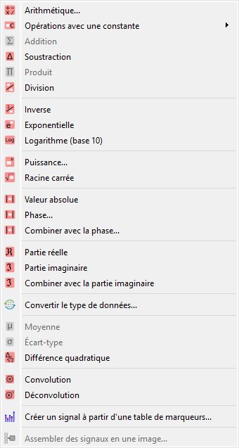
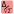

Opérations sur les signaux#
Cette section décrit les opérations qui peuvent être effectuées sur les signaux.
Voir aussi
Traitement des signaux pour plus d’informations sur les fonctionnalités de traitement des signaux, ou Analyse sur les signaux pour des informations sur les fonctionnalités d’analyse des signaux.

Capture d’écran du menu « Opérations ».#
Lorsque le « Panneau Signal » est sélectionné, les menus et barres d’outils sont mis à jour pour fournir les actions liées aux signaux.
Le menu « Opérations » permet d’effectuer diverses opérations sur les signaux sélectionnés, telles que des opérations arithmétiques, la détection de pics, ou encore la convolution.
Arithmétique#
Évalue une expression arithmétique définie par l’utilisateur sur les signaux sélectionnés. L’expression peut référencer les tableaux X et Y du signal comme variables.
Opérations avec une constante#
Crée un signal à partir d’une opération avec une constante sur chaque signal sélectionné :
Opération |
Description |
|---|---|
|
\(y_{k} = y_{k-1} + c\) |
|
\(y_{k} = y_{k-1} - c\) |
|
\(y_{k} = y_{k-1} \times c\) |
|
\(y_{k} = \dfrac{y_{k-1}}{c}\) |
 Addition
Addition Soustraction
Soustraction Multiplication
Multiplication Division
DivisionOpérations arithmétiques de base#
Opération |
Description |
|---|---|
|
\(y_{M} = \sum_{k=0}^{M-1}{y_{k}}\) |
|
\(y_{2} = y_{1} - y_{0}\) |
|
\(y_{M} = \prod_{k=0}^{M-1}{y_{k}}\) |
|
\(y_{2} = \dfrac{y_{1}}{y_{0}}\) |
|
\(y_{2} = \dfrac{1}{y_{1}}\) |
|
\(y_{2} = \exp(y_{1})\) |
|
\(y_{2} = \log_{10}(y_{1})\) |
 Somme
Somme Différence
Différence Produit
Produit Division
Division Inverse
Inverse Exponentielle
Exponentielle Logarithme (base 10)
Logarithme (base 10)Convolution et Déconvolution#
Opération |
Implémentation |
|---|---|
|
Basée sur scipy.signal.convolve |
|
Déconvolution dans le domaine fréquentiel |
 Convolution
Convolution Déconvolution
DéconvolutionValeur absolue et opérations sur les signaux complexes#
Opération |
Description |
|---|---|
|
\(y_{k} = |y_{k-1}|\) |
|
|
|
Considère le signal courant comme le module et permet de sélectionner un signal représentant la phase pour les fusionner en un signal complexe |
|
\(y_{k} = \Re(y_{k-1})\) |
|
\(y_{k} = \Im(y_{k-1})\) |
|
Considère le signal courant comme la partie réelle et permet de sélectionner un signal représentant la partie imaginaire pour les fusionner en un signal complexe |
 Valeur absolue
Valeur absolue Phase (argument)
Phase (argument) Partie réelle
Partie réelle Partie imaginaire
Partie imaginaireConversion du type de données#
L’action « Convertir le type de données »  permet de convertir le type de données des signaux sélectionnés.
permet de convertir le type de données des signaux sélectionnés.
Note
La conversion du type de données utilise la fonction numpy.ndarray.astype() avec les paramètres par défaut (casting=”unsafe”).
Statistiques entre les signaux#
Crée un nouveau signal à partir d’une opération statistique sur chaque point des signaux sélectionnés :
Opération |
Description |
|---|---|
|
\(y_{M} = \dfrac{1}{M}\sum_{k=0}^{M-1}{y_{k}}\) |
|
\(y_{M} = \sqrt{\dfrac{1}{M}\sum_{k=0}^{M-1}{(y_{k} - \bar{y})^{2}}}\) |
 Quadratic Difference |
\(y_{2} = \sqrt{y_{1}^{2} - y_{0}^{2}}\) |
 Moyenne
Moyenne Écart-type
Écart-typeAutres fonctions mathématiques#
Fonction |
Description |
|---|---|
|
\(y_{k} = y_{k}^{n}\) |
|
\(y_{k} = \sqrt{y_{k}}\) |
|
Créer une image 2D en assemblant les signaux 1D sélectionnés en lignes ou colonnes, avec une normalisation optionnelle. |
 Puissance
Puissance Racine carrée
Racine carrée Assembler les signaux en une image
Assembler les signaux en une image